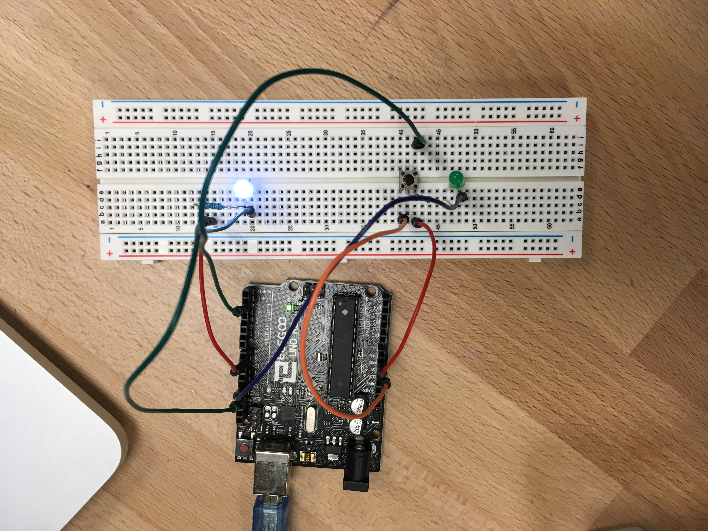

Rachel Ren's Assignment 2!



int ledPin = 9; // LED connected to digital pin 9
int R = 0; // initialize R to 0
// constants won't change. They're used here to set pin numbers:
const int buttonPin = 2; // the number of the pushbutton pin
const int ledPinButton = 13; // the number of the LED pin
// variables will change:
int buttonState = 0; // variable for reading the pushbutton status
void setup() {
// initialize the LED pin as an output:
pinMode(ledPinButton, OUTPUT);
// initialize the pushbutton pin as an input:
pinMode(buttonPin, INPUT);
}
void loop() {
// read the state of the pushbutton value:
buttonState = digitalRead(buttonPin);
// check if the pushbutton is pressed. If it is, the buttonState is HIGH:
if (buttonState == HIGH) {
// turn LED on:
digitalWrite(ledPinButton, HIGH);
} else {
// turn LED off:
digitalWrite(ledPinButton, LOW);
}
// analog write; loop to fade LED in and out between level of 0-256
for(int i = 0; i < 256;i++){
// writes the level of brightness of the LED to ledPin
analogWrite(ledPin, R + i);
// delay of .01 seconds
delay(10);
}
}